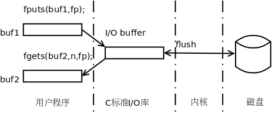

fopen/fclose
打开文件就是在操作系统中分配一些资源用于保存该文件的状态信息，并得到该文件的标识，以后用户程序就可以用这个标识对文件做各种操作，关闭文件则释放文件在操作系统中占用的资源，使文件的标识失效，用户程序就无法再操作这个文件了
FILE* fopen(const char* filename, const char* mode);
FILE是C标准库中定义的结构体类型，其中包含文件描述符、I/O缓冲区和当前读写位置等信息，调用者不必知道FILE结构体都有哪些成员，文件指针所指的FILE结构体的成员在库函数内部维护，调用者不应该直接访问这些成员，这样的指针称为不透明指针或者叫句柄
filename
可以是相对路径，也可以是绝对路径
mode必选参数
r：若文件存在，则以只读方式打开；若不存在，则出错
w：若文件存在，则清空原有内容，以只写方式打开；若不存在，则创建新文件，以只写打开
a：若文件存在，则以追加写的方式打开；若不存在，则创建新文件，以追加写打开
mode可选可选
b/t：t表示文本文件，b表示二进制文件，有些操作系统的文本文件和二进制文件格式不同，而在UNIX系统中，无论文本文件还是二进制文件都是由一串字节组成，t和b没有区分，用哪个都一样，也可以省略不写
+：以可读可写方式打开
1 | // 打开一个文件时如果出错，fopen将返回NULL并设置errno，程序中应该做出错处理，通常这样写 |
int fclose(FILE* stream );
把文件指针传给fclose可以关闭它所标识的文件，关闭之后该文件指针就无效了，不能再使用了。如果fclose调用出错（比如传给它一个无效的文件指针）则返回EOF并设置errno，EOF在stdio.h中定义：
1 | /* End of file character. |
如果不调用fclose，在进程退出时系统会自动关闭文件，但是不能因此就忽略fclose调用
stdin/stdout/stderr
我们经常用的printf打印到屏幕，scanf读键盘输入，也属于I/O操作，但不是对文件做I/O操作而是对终端设备做I/O操作。终端设备和文件一样也需要先打开后操作，终端设备也有对应的路径名，/dev/tty就表示和当前进程相关联的终端设备，它不表示磁盘上的一组数据，而是表示一个设备。用ls -l命令查看这个文件，显示文件类型、主设备号、次设备号等，主设备号标识内核中的一个设备驱动程序，次设备号标识该设备驱动程序管理的一个设备。内核通过设备号找到相应的驱动程序，完成对该设备的操作。设备文件没有文件尺寸这个属性的，因为设备文件在磁盘上不保存数据，对设备文件做读写操作并不是读写磁盘上的数据，而是在读写设备。UNIX的传统是Everything is a file，键盘、显示器、串口、磁盘等设备在/dev目录下都有一个特殊的设备文件与之对应，这些设备文件也可以像普通文件一样打开、读、写和关闭，使用的函数接口是相同的
程序启动时（main函数还没开始执行前）会自动把终端设备打开三次，分别赋给三个FILE*指针stdin、stdout和stderr，这三个文件指针是libc中定义的全局变量，在stdio.h中声明，这三个文件指针的打开方式都是可读可写的，但通常stdin只用于读操作，称为标准输入，stdout只用于写操作，称为标准输出，stderr也只用于写操作，称为标准错误输出，通常程序的运行结果打印到标准输出，而错误提示打印到标准错误输出，所以fopen的错误处理写成这样更符合惯例：
1 | if ((fp = fopen("/tmp/file1", "r")) == NULL) { |
errno与perror函数
很多系统函数在错误返回时将错误原因记录在libc定义的全局变量errno中，每种错误原因对应一个错误码，errno在头文件errno.h中声明，是一个整型变量，所有错误码都是正整数
如果在程序中打印错误信息时直接打印errno变量，打印出来的只是一个整数值，仍然看不出是什么错误，可以用perror或strerror函数将errno解释成字符串再打印
1 | FILE* fp = fopen("abcde", "r"); |
有些函数的错误码并不保存在errno中，而是通过返回值返回，就不能调用perror打印错误原因了，这时就要使用strerror：
fputs(strerror(n), stderr);
以字节为单位的I/O函数
int fgetc(FILE* stream);
- 文件的打开方式必须是可读
- 系统对于每个打开的文件都记录着当前读写位置在文件中的地址。当文件打开时，读写位置是0，每调用一次fgetc，读写位置向后移动一个字节，因此可以连续多次调用fgetc函数依次读取多个字节
- fgetc成功时返回读到一个字节，本来应该是unsigned char型的，但由于函数原型中返回值是int型，所以这个字节要转换成int型再返回，因为出错或读到文件末尾时fgetc将返回EOF，即-1，保存在int型的返回值中是0xffffffff，如果读到字节0xff，由unsigned char型转换为int型是0x000000ff，只有规定返回值是int型才能把这两种情况区分开，如果规定返回值是unsigned char型，那么当返回值是0xff时无法区分到底是EOF还是字节0xff
int fputc(int character, FILE* stream);
- 文件的打开方式必须是可写的（包括追加）
- 每调用一次fputc，读写位置向后移动一个字节，因此可以连续多次调用fputc函数依次写入多个字节。但如果文件是以追加方式打开的，每次调用fputc时总是将读写位置移到文件末尾然后把要写入的字节追加到后面
从终端设备输入时有两种方法表示文件结束，一种方法是在一行的开头输入Ctrl-D（如果不在一行的开头则需要连续输入两次Ctrl-D），另一种方法是利用Shell的Heredoc语法：
1 | $ ./a.out <<END |
<<END表示从下一行开始是标准输入，直到某一行开头出现END时结束。<<后面的结束符可以任意指定，不一定得是END，只要和输入的内容能区分开就行
操作读写位置的函数
int fseek(FILE* stream, long int offset, int origin);
long ftell(FILE* stream);
void rewind(FILE* stream);
fseek可以任意移动读写位置，origin参数含义：
SEEK_SET从文件开头移动offset个字节
SEEK_CUR从当前位置移动offset个字节
SEEK_END从文件末尾移动offset个字节
offset可正可负，负值表示向前（向文件开头的方向）移动，正值表示向后（向文件末尾的方向）移动，如果向前移动的字节数超过了文件开头则出错返回，如果向后移动的字节数超过了文件末尾，再次写入时将增大文件尺寸，从原来的文件末尾到fseek移动之后的读写位置之间的字节都是0，成功返回0，出错返回-1并设置errno
ftell可以返回当前的读写位置，成功返回当前读写位置，出错返回-1并设置errno
rewind函数把读写位置移到文件开
以字符串为单位的I/O函数
char* fgets(char* str, int num, FILE* stream);
fgets从指定的文件中读一行字符到调用者提供的缓冲区中
参数str是缓冲区的首地址，num是缓冲区的长度，该函数从stream所指的文件中读取以’\n’结尾的一行（包括’\n’在内）存到缓冲区str中，并且在该行末尾添加一个’\0’组成完整的字符串，成功时str指向哪返回的指针就指向哪，出错或者读到文件末尾时返回NULL
如果文件中的一行太长，fgets从文件中读了num-1个字符还没有读到’\n’，就把已经读到的num-1个字符和一个’\0’字符存入缓冲区，文件中剩下的半行可以在下次调用fgets时继续读
如果一次fgets调用在读入若干个字符后到达文件末尾，则将已读到的字符串加上’\0’存入缓冲区并返回，如果再次调用fgets则返回NULL，可以据此判断是否读到文件末尾
fgets只适合读文本文件而不适合读二进制文件，因为文本文件中的所有字符都应该是可见字符，没有’\0’，二进制文件可能有’\0’（0x00字节）调用fgets之后就无法判断缓冲区中的’\0’究竟是从文件读上来的字符还是由fgets自动添加的结束符
int fputs(const char* str, FILE* stream);
fputs向指定的文件写入一个字符串，缓冲区str中保存的是以’\0’结尾的字符串，fputs将该字符串写入文件stream，但并不写入结尾的’\0’，成功返回一个非负整数，出错返回EOF
以记录为单位的I/O函数
size_t fread(void* ptr, size_t size, size_t count, FILE* stream);
size_t fwrite(const void* ptr, size_t size, size_t count, FILE* stream);
fread和fwrite用于读写记录，这里的记录是指一串固定长度的字节，比如一个int、一个结构体或者一个定长数组。参数size指出一条记录的长度，而count指出要读或写多少条记录，这些记录在ptr所指的内存空间中连续存放，共占size*count个字节，fread从文件stream中读出size*count个字节保存到ptr中，而fwrite把ptr中的size*count个字节写到文件stream中
count是请求读或写的记录数，fread和fwrite返回的记录数有可能小于count指定的记录数。例如当前读写位置距文件末尾只有一条记录的长度，调用fread时指定count为2，则返回值为1。如果当前读写位置已经在文件末尾了，或者读文件时出错了，则fread返回0。如果写文件时出错了，则fwrite的返回值小于count指定的值
格式化I/O函数
int fprintf(FILE* stream, const char* format, …);
int sprintf(char* str, const char* format, …);
int snprintf(char* s, size_t n, const char* format, …);
int vprintf(const char* format, va_list arg);
int vfprintf(FILE* stream, const char* format, va_list arg);
int vsprintf(char* s, const char* format, va_list arg);
int vsnprintf(char* s, size_t n, const char* format, va_list arg);
fprintf打印到指定的文件stream中，sprintf并不打印到文件，而是打印到用户提供的缓冲区str中并在末尾加’\0’，由于格式化后的字符串长度很难预计，所以很可能造成缓冲区溢出，用snprintf更好 截断到n-1字节，再加上一个’\0’写入缓冲区，也就是说snprintf保证字符串以’\0’结尾。snprintf的返回值是格式化后的字符串长度（不包括结尾的’\0’），如果字符串被截断，返回的是截断之前的长度，把它和实际缓冲区中的字符串长度相比较就可以知道是否发生了截断
后四个函数在前四个函数名的前面多了个v，表示可变参数不是以…的形式传进来，而是以va_list类型传进来
实现格式化打印错误的err_sys函数
1 |
|
printf并不知道实际参数的类型，只能按转换说明指出的参数类型从栈帧上取参数，所以如果实际参数和转换说明的类型不符，结果可能会有些意外。另外，如果s指向一个字符串，用printf(s)打印这个字符串可能得到错误的结果，因为字符串中可能包含%号而被printf当成转换说明，printf并不知道后面没有传其它参数，照样会从栈帧上取参数。所以比较保险的办法是printf("%s", s)
int fscanf(FILE* stream, const char* format, …);
int sscanf(const char* s, const char* format, …);
int vscanf(const char* format, va_list arg);
int vsscanf(const char* s, const char* format, va_list arg);
int vfscanf(FILE* stream, const char* format, va_list arg);
fscanf从指定的文件stream中读字符，而sscanf从指定的字符串s中读字符。后面三个以v开头的函数的可变参数不是以…的形式传进来，而是以va_list类型传进来
scanf用输入的字符去匹配格式化字符串中的字符和转换说明，如果成功匹配一个转换说明，就给一个参数赋值，如果读到文件或字符串末尾就停止，或者如果遇到和格式化字符串不匹配的地方（比如转换说明是%d却读到字符A）就停止。如果遇到不匹配的地方而停止，scanf的返回值可能小于赋值参数的个数，文件的读写位置指向输入中不匹配的地方，下次调用库函数读文件时可以从这个位置继续
文件结束判定
int feof(FILE* stream);
在文件读取过程中，不能用feof函数的返回值直接用来判断文件的是否结束，而是应用于当文件读取结束的时候，判断是读取失败结束，还是遇到文件尾结束
- 文本文件读取是否结束，判断返回值是否为EOF （fgetc），或者NULL（fgets）
- 二进制文件的读取结束判断，判断返回值是否小于实际要读的个数
因为feof()函数，并不是通过读取到文件的EOF来评判，这个文件是否为空
它的工作原理是，如果光标所在位置后面有字符，返回0；如果没有，返回非0。它并不会读取相关信息，只是查看光标后是否还有内容。
对于一个空文件来说，当程序打开它的时候，光标会停在文件的开头，但是由于文件里什么内容都没有存（EOF却是存在的）即整个文件就存贮了一个EOF。当程序打开文件，并直接调用feof()时，光标的位置后有EOF字符，然后就返回0了
int ferror ( FILE* stream );
如果出错则返回非零，否则返回0
C标准库的I/O缓冲区

- 全缓冲：如果缓冲区写满了就写回内核。常规文件通常是全缓冲的
- 行缓冲：如果用户程序写的数据中有换行符就把这一行写回内核，或者如果缓冲区写满了就写回内核。标准输入和标准输出对应终端设备时通常是行缓冲的
- 无缓冲用户程序每次调库函数做写操作都要通过系统调用写回内核。标准错误输出通常是无缓冲的，这样用户程序产生的错误信息可以尽快输出到设备
除了写满缓冲区、写入换行符之外，行缓冲还有一种情况会自动做Flush操作。如果：
- 用户程序调用库函数从无缓冲的文件中读取
- 或者从行缓冲的文件中读取，并且这次读操作会引发系统调用从内核读取数据
1 | int main() { |
调用printf并不会把字符串写到设备，但紧接着调用fgets读一个行缓冲的文件（标准输入），在读取之前会自动Flush所有行缓冲，包括标准输出
手动刷新缓冲区
int fflush(FILE* stream);
成功返回0，出错返回EOF并设置errno，fflush(NULL)可以对所有打开文件的I/O缓冲区做Flush操作